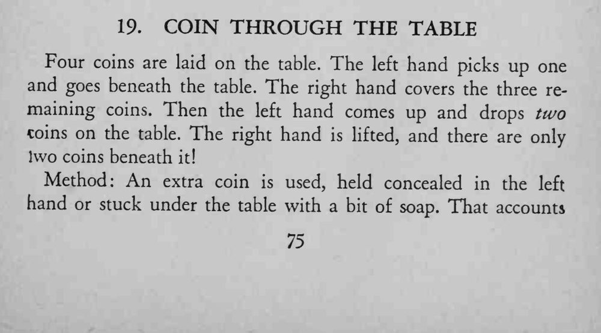
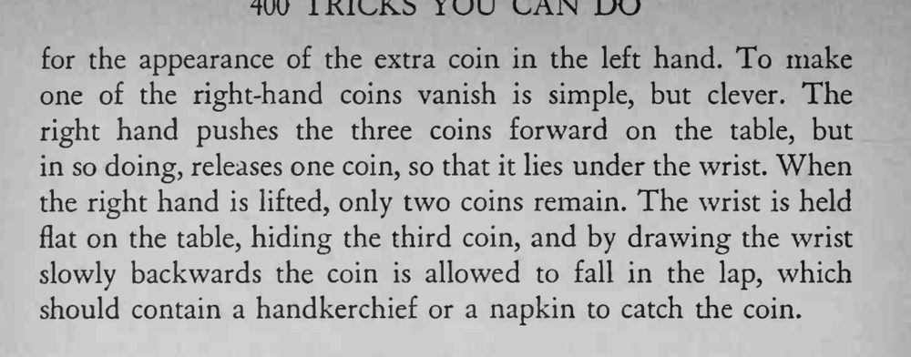

左手拿一枚硬币伸到桌下，右手盖住桌上剩下三枚；左手再上来时放下两枚，右手抬起，桌上却只剩两枚。
腿上要铺好手帕接币，免得硬币落地发出声音。


Four coins are laid on the table. The left hand picks up one and goes beneath the table. The right hand covers the three remaining coins. Then the left hand comes up and drops two coins on the table. The right hand is lifted, and there are only Ivvo coins beneath it! Method: An extra coin is used, held concealed in the left hand or stuck under the table with a bit of soap. That accounts for the appearance of the extra coin in the left hand. To make one of the right-hand coins vanish is simple, but clever. The right hand pushes the three coins forward on the table, but in so doing, releases one coin, so that it lies under the wrist. When the right hand is lifted, only two coins remain. The wrist is held flat on the table, hiding the third coin, and by drawing the wrist slowly backwards the coin is allowed to fall in the lap, which should contain a handkerchief or a napkin to catch the coin.